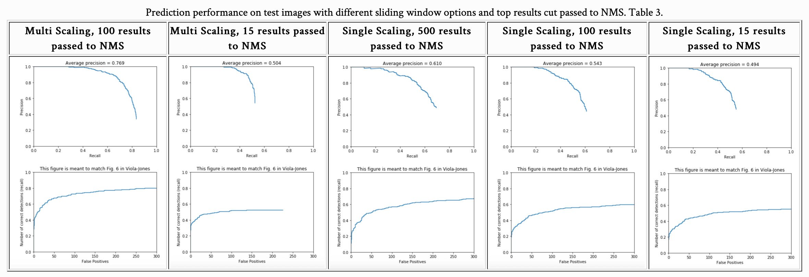

Project 4: Scene recognition with bag of words
Example of face detection algorithm result.
For this project we had to create a simple sliding window detector based on Dalal and Triggs algorithm. This algorithm despite being straightforward actually shows a pretty good performance of around 83-84% accuracy of face detection, if tuned. The pipeline for the project ran the following way
- Get HoG features for two classes of images (faces and non-faces).
- Train the SVM classifier on the train set.
- Get False Positives from the trained SVM to retrain it for increased accuracy.
- Using trained SVM and sliding window on the test images evaluate performance.
- Repeat steps from 2nd to 4th until a good performance is reached (trying to reach the best possible given the variables).
- Make a final test on class pictures
Geting HoG features and training SVM
For features describing the images we converted the to HoG features. In order to get the best performance with SVM, face images were loaded in gray, so that the color is not a factor in training, since the no face images were given in gray scale. No face images were cut out from training scenes without the faces, so that they match in size the face training data. The most important factor with Linear SVM training, though was C parameter. The data was fit with various Cs ranging from 1 to 0.001 (given in Table 1.) And from the performance results it can be concluded that the training set could be divided best with a straight line that doesn't represent maximum possible distance from both sets, yet given the test data (Table 2. and Fig. 1) best SVM performance was achieved with C value around 0.01 (the accuracy precision reached its peak value of 84% there)
Another contributing factor in face detection performance and SVM training was emphasisizing false positives, or is they were called in our project hard negatives. As can be seen from figure 1 the inclusion of hard negatives (orange line) has a noticable performance improvement, when training SVM with small enough values, yet it actually performes slightly more poorly on C values over 0.1. It can indicate that false positives are indeed closely positioned to true positive data and the rightly chosen C inclination has allowed SVM to overcome this issue and increase accuracy, although not by much given the not so complex features used.
Sliding window detector
The sliding window detector was built in a couple of steps. In order to be able to detect the faces each image should've been converted to HoG and then the submatrices of HoG cell size squared were croped out of the 'HoG' images in order to get the prediction from the trained SVM and the top cut of images that passed the threshold were fed to NMS to later be evaluated as right or wrong face detections. Here the three important parameters played a major role. First, since faces in each image were of different size the given HoG cell size wouldn't work on images with too small or too big faces as they woouldn't fit in the area of HoG window nicely, so that the face could be detected. For that each image was evaluated with rescaling that ran from 1.0 to the smallest possible, so that the HoG features still could be extractred given the model parameters. As it can be seen from Table 3 choice of multiple rescaling does increase performance than a single chosen scaling factor for the reasons described above. Secondly, the threshold for scores considered to be positive detections comes into picture. As it can be seen from Table 1, when having small C (and in our scenario we chose 0.01 for best performance), the score that would most likely to detect a true positive should be around 1, but it would cut out other true positive detections, which in some cases may result in no face detections what so ever. Playin around with threshold the value of 0.05 was chosen, as values of 0.1, 0.3, 0.5 and 1 cut out any face predicitons for certain images.
|  |
Lastly, another factor to affect overall performance was the decision of how many top detections to pass to NMS (which cleared out overlaps). This had the similar effect as threshold cuting out false positives along with true positives, if too little of a number was chosen. As can be seen from Table 2 the cut-offs of 15 to below 500 although producing less false positives also cuts out many true positives, as there are a lot of images with tiny faces (Table 5.). It was tested that when taken 500 images of more the performance reaches a good value, which doesn't increase with the expansion of number of possible detections passed to NMS.

|
From Table 3 and Table 4 one can see the effects of C and inclusion or exclusion of false postives in SVM training set on performance. As discussed above the most optimal C obviously lay between 0.005 and 0.3 values (Figure 1), and the inclusion of hard negatives played its positive role on accuracy with Cs that showed the top performance in both scenarios (with and without hard negatives).
Results in Tables
As can bee seen from Tables 5 and 6 given the good overall acuracy of face predictor that was achieved there are still some cases left undetected (last column, second row), as our features couldn't account for the face taking the whole picture as well as a vast white frame, that would've affected HoG converted image and as a result feature extraction negatively for possible face detection.
There were also a lot of false positives in case of pictures with many small faces and prominent background elements. Since those faces would've been detected with images not resized much, it is only logical that a lot of other small cases of small crops with a non-flat HoG surace would've been dragged along the way, like folded fabric and heads turned back side (Table 6). Given that the detector performed extremly well in easy cases and pretty well in some hard cases (Table 6).
Citations
1 Dalal, N., Triggs, B., & Schmid, C. (2006). Human Detection Using Oriented Histograms of Flow and Appearance. Computer Vision – ECCV 2006 Lecture Notes in Computer Science, 428-441. doi:10.1007/11744047_33
2 James Hays, Computer Vision CS 6476 Fall 2018 slides
3 Szeliski, R. (2011). Computer vision algorithms and applications. London: Springer.